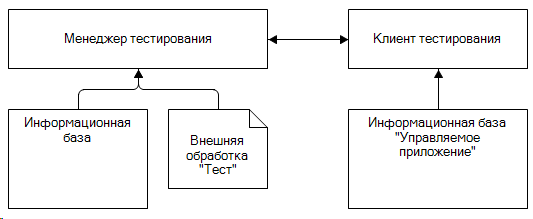
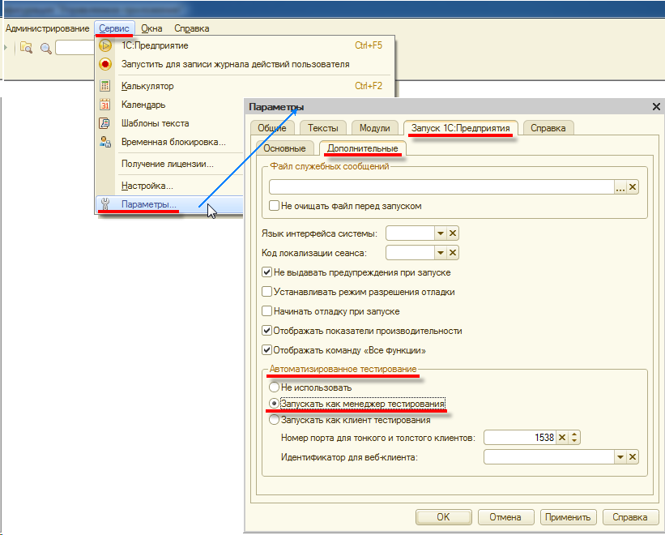
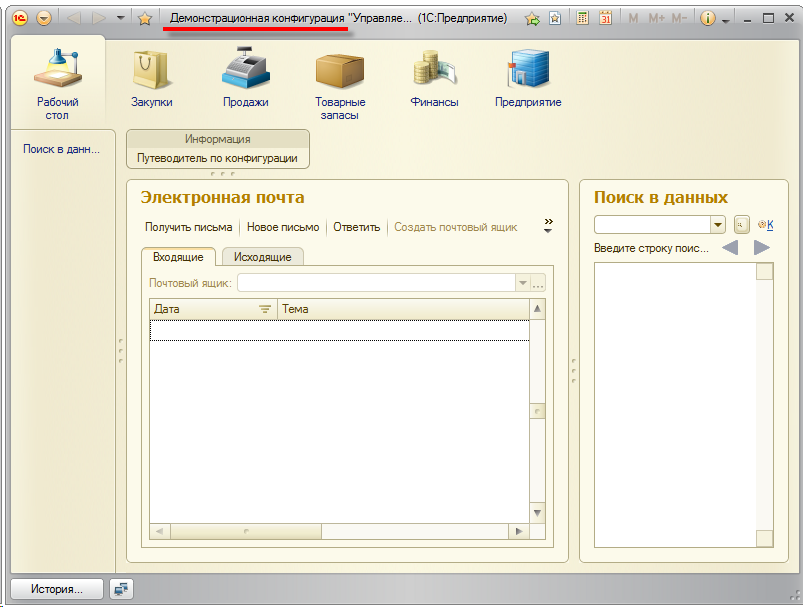
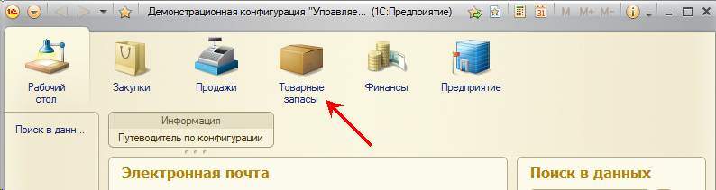
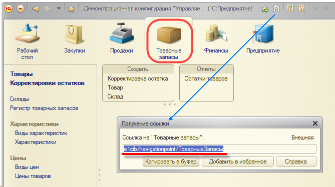
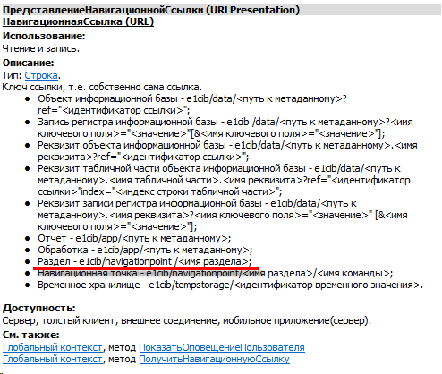
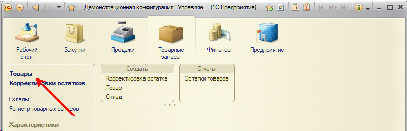
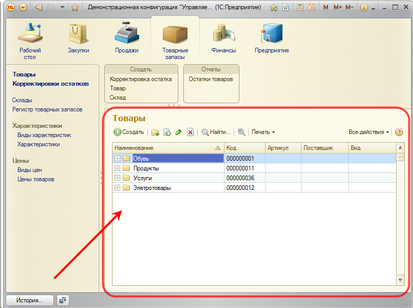
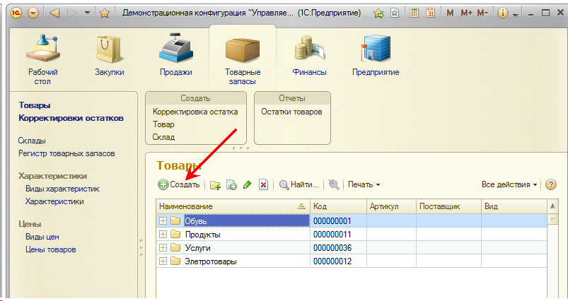
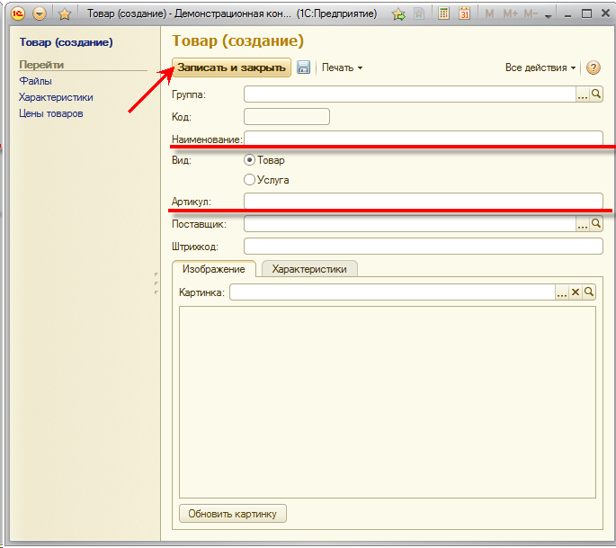

Пример автоматизированного тестирования
Рассмотрим простой пример запуска клиента тестирования, выполнения автоматизированного теста и проверки его результатов.
В качестве тестируемой конфигурации будем использовать демонстрационную базу Управляемое приложение (скачать). Программный код, выполняющий тестирование и проверку результатов, находится во внешней обработке Тест (скачать). Для запуска этой обработки можно использовать любую информационную базу.
Процесс автоматизированного тестирования заключается во взаимодействии двух специальным образом запущенных клиентских приложений: менеджера тестирования и клиента тестирования.
Менеджер тестирования в нашем примере будет исполнять внешнюю обработку Тест. Клиентом тестирования в нашем примере будет клиентское приложение демонстрационной базы Управляемое приложение.

Менеджера тестирования проще всего запустить из Конфигуратора. Для этого в параметрах конфигуратора можно установить режим запуска клиентского приложения - Запускать как менеджер тестирования (Сервис - Параметры - Запуск 1С:Предприятия - Дополнительные - Автоматизированное тестирование):

Другой способ запустить менеджера тестирования - из командной строки с ключом /TESTMANAGER. Например:
"C:\Program Files (x86)\1cv8\8.3.2.163\bin\1cv8.exe" ENTERPRISE /F C:\Users\username\Documents\InfoBase /TESTMANAGER
Запуск клиента тестирования и подключение к нему будем выполнять средствами встроенного языка, поэтому дальше просто рассмотрим текст процедуры, выполняющей тестирование (внешняя обработка Тест).
Запуск и подключение к клиенту тестирования
Запуск клиента тестирования выполним из командной строки, используя ключ /TESTCLIENT:
ЗапуститьСистему("C:\Program Files (x86)\1cv8\8.3.2.163\bin\1cv8.exe ENTERPRISE /F C:\Users\username\Documents\1C\Platform82Demo /N Администратор /TESTCLIENT");
После этого установим соединение с клиентом тестирования. Для этого создадим объект типа ТестируемоеПриложение и выполним его метод УстановитьСоединение():
ТестКлиент = Новый ТестируемоеПриложение();
Процесс запуска клиентского приложения может быть длительным, поэтому попытки установить соединение будем выполнять в цикле (60 раз), игнорируя системные исключения, возникающие при неудачной попытке установить соединение. В случае глобальной неудачи выведем для информации описание ошибки, возникшей в последний раз:
МаксИтераций = 60;
Для Счетчик = 1 По МаксИтераций Цикл
Попытка
ТестКлиент.УстановитьСоединение();
Прервать;
Исключение
// Вывести только последнее сообщение.
Если Счетчик = МаксИтераций Тогда
Сообщить(ОписаниеОшибки());
Возврат;
КонецЕсли;
КонецПопытки;
КонецЦикла;
Итак, клиент тестирования запущен и готов "к работе".
Навигация к началу теста
Тест будет заключаться в том, чтобы в списке товаров создать новый товар, заполнить его поля и записать в базу данных. Затем считать его из базы данных и убедиться, что значения его полей соответствуют тому, что мы записывали.
Поэтому прежде всего необходимо переместиться к списку товаров путем выполнения нескольких навигационных команд, расположенных в главном окне приложения:

Сначала получим главное окно приложения:
ГлавноеОкноТестКлиента = ТестКлиент.НайтиОбъект(Тип("ТестируемоеОкноКлиентскогоПриложения"), "Демонстрационная конфигурация*");
В данной ситуации мы точно знаем, что главное окно есть, раз соединение с клиентом тестирования успешно установлено. Поэтому просто находим главное окно. При этом первым параметром мы указываем, что ищем именно окно (Тип("ТестируемоеОкноКлиентскогоПриложения")), а не форму, поле или кнопку. А вторым параметром указываем шаблон заголовка этого окна, - заголовок начинается со слов Демонстрационная конфигурация. Указание заголовка нужно на тот случай, если после запуска приложения могут быть открыты какие-либо вспомогательные окна помимо главного окна.
Теперь нужно перейти в раздел Товарные запасы, выполнив соответствующую команду в панели разделов:

На "языке" автоматизированного тестирования это будет выглядеть так:
ГлавноеОкноТестКлиента.ВыполнитьКоманду("e1cib/navigationpoint/ТоварныеЗапасы");
То есть для программной эмуляции команды нужно знать её навигационную ссылку. Узнать навигационную ссылку можно двумя способами.
Во-первых, можно интерактивно выполнить нужную команду и затем интерактивно же получить навигационную ссылку на тот фрагмент интерфейса, в котором мы оказались:

Во-вторых в синтакс-помощнике можно посмотреть описание объекта ПредставлениеНавигационнойСсылки, а точнее его свойства НавигационнаяСсылка:

При переходе в некоторый раздел программы не открываются новые окна, не открываются новые формы. Поэтому после выполнения команды мы ничего не ждём, а сразу же выполняем следующую команду - открываем список товаров:

На "языке" автоматизированного тестирования это будет выглядеть так:
ГлавноеОкноТестКлиента.ВыполнитьКоманду("e1cib/navigationpoint/ТоварныеЗапасы/Справочник.Товары.Команда.ОткрытьСписок");
Здесь, для определения навигационной ссылки, можно использовать те же два способа, которые были рассмотрены раньше.
Выполнение этой команды должно привести к открытию новой формы - формы списка товаров:

Открытие формы может выполняться долго. Более того, форма может вообще не открыться, если в процессе ее инициализации произойдёт ошибка. Поэтому после выполнения команды в течение 60 секунд мы ожидаем появление этой формы:
Если НЕ ТестКлиент.ОжидатьОтображениеОбъекта(Тип("ТестируемаяФорма"), "Товары*") Тогда
Сообщить("Не удалось открыть форму списка справочника ""Товары"" в течение 60 секунд.");
Возврат;
КонецЕсли;
Для идентификации нужной формы используем фрагмент её заголовка Товары. 60 секунд - это стандартный тайм-аут метода ОжидатьОтображениеОбъекта(). Если нужен другой тайм-аут, он указывается в четвёртом параметре этого метода.
После того, как форма списка товаров открылась, получим её:
ФормаТоваров = ТестКлиент.НайтиОбъект(Тип("ТестируемаяФорма"), "Товары*");
Тут надо сделать небольшое отступление и заметить, что стандартной последовательностью действий при выполнении теста является:
Однако существует и другой способ:
В четвёртом параметре метода НайтиОбъект() также можно указать тайм-аут. В стандартном состоянии он не используется (равен нулю), но его можно установить. И тогда не ожидать появления объекта, а потом наверняка его получить (как в первом случае), а сразу же пытаться получить объект в течение какого-то времени. Возможно в некоторых ситуациях второй способ выполнения теста может оказаться более удобным.
Выполнение теста
Но вернемся к тесту. Мы выполнили все подготовительные навигационные действия для выполнения теста - открыли форму списка товаров. Теперь нужно создать новый товар, заполнить его поля и записать.
Для этого пользователь обычно выполняет команду Создать в форме списка товаров:

На "языке" автоматизированного тестирования это будет выглядеть так:
ГлавноеОкноТестКлиента.ВыполнитьКоманду("e1cib/command/Справочник.Товары.Команда.Создать");
Это стандартная команда, поэтому ее навигационная ссылка формируется по принципу: "e1cib/command/" + <имя стандартной команды>.
Ожидаем отображение формы нового товара и получаем её:
Если НЕ ТестКлиент.ОжидатьОтображениеОбъекта(Тип("ТестируемаяФорма"), "Товар*") Тогда
Сообщить("Не удалось открыть форму нового товара в течение 60 секунд.");
Возврат;
КонецЕсли;
ФормаНовогоТовара = ТестКлиент.НайтиОбъект(Тип("ТестируемаяФорма"), "Товар*");
Так выглядит полученная нами форма:

Заполним поле Наименование. После открытия формы это поле активно, поэтому просто находим его и вводим текст:
ПолеНаименование = ФормаНовогоТовара.НайтиОбъект(Тип("ТестируемоеПолеФормы"), "Наименование");
ПолеНаименование.ВвестиТекст("Новый товар (автотест)");
Заполним поле Артикул. Это поле неактивно, поэтому перед вводом текста его нужно активизировать:
ПолеАртикул = ФормаНовогоТовара.НайтиОбъект(Тип("ТестируемоеПолеФормы"), "Артикул*");
ПолеАртикул.Активизировать();
ПолеАртикул.ВвестиТекст("ДлинныйАртикулТовара");
Нажмём кнопку Записать и Закрыть. Идентифицируем её по заголовку:
КнопкаЗаписатьИЗакрыть = ФормаНовогоТовара.НайтиОбъект(Тип("ТестируемаяКнопкаФормы"), "Записать и закрыть");
КнопкаЗаписатьИЗакрыть.Нажать();
На этом выполнение теста закончено.
Проверка результатов теста
Проверять результаты тестирования будем так же, как это делает пользователь визуально. В списке товаров найдём наш новый товар по наименованию. Откроем его и проверим значения полей Наименование и Артикул.
Во-первых, нашего товара может и не быть в списке, если запись товара по каким-то причинам не была выполнена. Например, если в тесте закомментировать ввод наименования, то новый товар не будет записан, так как это поле обязательное для заполнения.
Во-вторых, записанные значения полей могут отличаться от тех, которые мы устанавливали. Например, длина поля Артикул - 15 символов. И наверняка введенный нами артикул не будет записан целиком.
Форма списка товаров у нас открыта, поэтому получим таблицу из этой формы, "встанем" на её начало и будем спускаться вниз в надежде найти наш товар.
СписокТоваров = ФормаТоваров.НайтиОбъект(Тип("ТестируемаяТаблицаФормы"), "Список*");
СписокТоваров.ПерейтиКПервойСтроке();
Обход таблицы будем выполнять в бесконечном цикле. Получая текст ячейки Наименование из текущей строки и сравнивая его с эталонным наименованием.
В случае удачи прерываем цикл. А в случае неудачи пытаемся перейти к следующей строке. Если следующей строки нет - выходим из цикла:
ТестируемыйТоварНайден = Ложь;
Пока Истина Цикл
НаименованиеТовара = СписокТоваров.ПолучитьТекстЯчейки("Наименование");
// Это искомый товар - выходим из цикла.
Если НаименованиеТовара = "Новый товар (автотест)" Тогда
ТестируемыйТоварНайден = Истина;
Прервать;
КонецЕсли;
// Это не тот товар - переходим к следующей строке, если она есть.
Попытка
// Если следующей строки нет, будет исключение и мы выйдем из цикла
СписокТоваров.ПерейтиКСледующейСтроке();
Исключение
Прервать;
КонецПопытки;
КонецЦикла;
// Тестируемый товар не найден - ошибка теста.
Если Не ТестируемыйТоварНайден Тогда
Сообщить("Тестируемый товар не найден в списке товаров. Не выполнена запись тестируемого товара.");
Возврат;
КонецЕсли;
После того, как тестируемый товар найден, открываем его форму, имитируя интерактивное действие пользователя - двойной щелчок мыши или нажатие клавиши Enter:
СписокТоваров.Выбрать();
"Как обычно" ожидаем открытия формы и получаем её:
Если НЕ ТестКлиент.ОжидатьОтображениеОбъекта(Тип("ТестируемаяФорма"), "Товар*") Тогда
Сообщить("Не удалось открыть форму тестируемого товара в течение 60 секунд.");
Возврат;
КонецЕсли;
ФормаТестируемогоТовара = ТестКлиент.НайтиОбъект(Тип("ТестируемаяФорма"), "Новый товар (автотест)*");
Находим поле Артикул и получаем его значение:
ПолеАртикул = ФормаТестируемогоТовара.НайтиОбъект(Тип("ТестируемоеПолеФормы"), "Артикул");
ТекущийАртикул = ПолеАртикул.ПолучитьПредставлениеДанных();
Если его значение отличается от эталона - прекращаем тестирование (или просто сообщаем об ошибке):
Если ТекущийАртикул <> "ДлинныйАртикулТовара" Тогда
Сообщить("Ошибка в поле ""Артикул"": Эталон: ДлинныйАртикулТовара , Текущее значение: " + ТекущийАртикул);
Возврат;
КонецЕсли;
Аналогично можно проверить и значения других полей формы, например поля Наименование.